01 · Introduction
Project Overview
The Behavioral Risk Factor Surveillance System (BRFSS) is the CDC's annual telephone survey of U.S. residents on health behaviors, chronic conditions, and preventive service use. The 2015 cleaned release used here contains 253,680 respondents and 22 health indicators — a mix of binary lifestyle/medical-history flags, ordinal self-reported scales, and a handful of continuous/count variables.
The target, Diabetes_012, is a three-class label: No Diabetes,
Prediabetes, or Diabetes (including borderline diabetes).
The goal of this project is to understand which lifestyle and health factors are most
strongly associated with diabetes status, engineer features that sharpen that signal, and
train a model that can serve as a population-level risk-screening tool —
flagging higher-risk individuals for follow-up clinical testing rather than diagnosing them outright.
| Check | Result |
|---|---|
| Respondents | 253,680 |
| Health indicators | 22 (1 continuous, 2 count, 19 binary/ordinal) |
| Missing values | 0 — fully complete |
| Duplicate rows | 9.4% (~23,899) — plausible for a categorical survey; retained for EDA |
| Target | Diabetes_012 — 3-class (No Diabetes / Prediabetes / Diabetes) |
| Class | Count | Share |
|---|---|---|
| No Diabetes | 213,703 | 84.2% |
| Prediabetes | 4,631 | 1.8% |
| Diabetes | 35,346 | 13.9% |
02 · Exploratory Data Analysis
Exploratory Data Analysis
Eleven sections of EDA establish the dataset's shape, quantify the class imbalance, and rank every feature's univariate association with diabetes status — first visually, then with formal statistical tests (chi-square / Cramér's V for categorical features, Kruskal-Wallis / epsilon-squared for continuous ones).
2.1Target Variable — Severe Class Imbalance
Diabetes_012: 0 = No Diabetes, 1 = Prediabetes,
2 = Diabetes. Roughly 84% of respondents have no diabetes,
~2% are prediabetic, and ~14% have diabetes. The Prediabetes
class is especially rare and becomes a central challenge for modeling — addressed later
via class weighting and macro-averaged metrics.
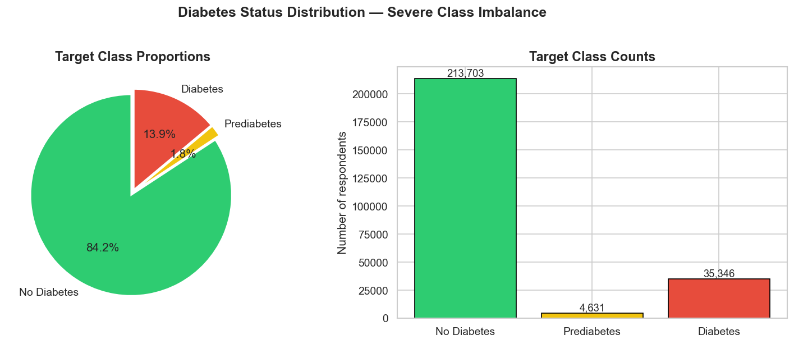
2.2Numeric Feature Distributions
BMI, MentHlth (days of poor mental health in the past 30 days), and
PhysHlth (days of poor physical health) are the only continuous/count features.
BMI shows a clear rightward shift for the Diabetes
group — higher BMI is strongly associated with diabetes/prediabetes. MentHlth
and PhysHlth are heavily right-skewed (most respondents report 0 bad days), but
the Diabetes group has a noticeably heavier tail, indicating more reported unhealthy days.
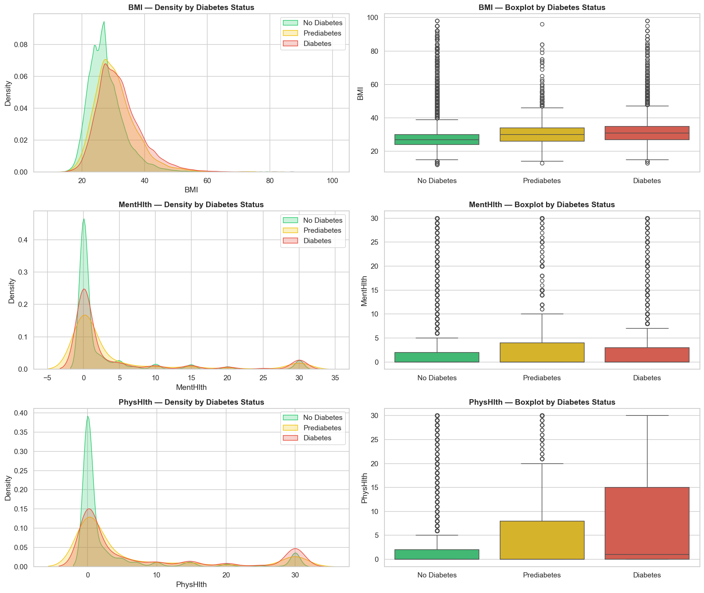
2.3Age as a Risk Factor
Age is coded in 13 brackets (1 = 18–24 … 13 = 80+). Diabetes prevalence
climbs steadily with age.
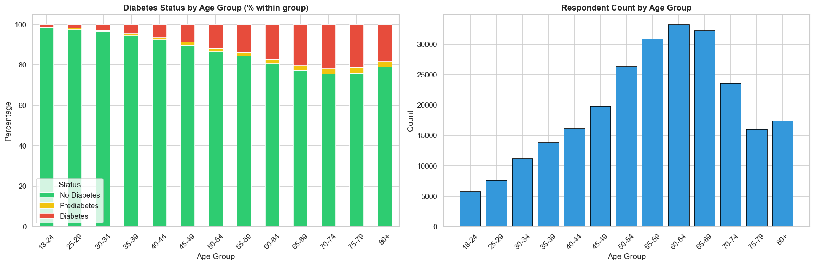
2.4Binary Health Indicators
For each binary feature (1 = Yes / 0 = No), we compute the proportion of “Yes” responses within each diabetes class — a direct view of how strongly each lifestyle/health factor co-occurs with diabetes status.
HighBP, HighChol, DiffWalk
(difficulty walking), and HeartDiseaseorAttack show the largest gaps between the
No-Diabetes and Diabetes groups — all roughly 2× more prevalent among
diabetics. Protective behaviors like PhysActivity, Fruits, and
Veggies are modestly less common in the Diabetes group. Sex and
AnyHealthcare show little difference across groups.
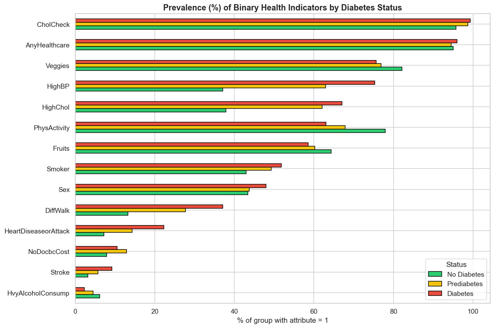
2.5General Health, Education & Income
GenHlth is self-reported general health (Excellent → Poor). Education
and Income are socioeconomic indicators.
GenHlth shows the strongest gradient of all three —
among respondents reporting “Poor” general health, over 35% have
diabetes, vs. under 5% for “Excellent”. Education and income show
milder but consistent gradients: lower brackets show higher diabetes prevalence, reflecting
well-documented socioeconomic health disparities.
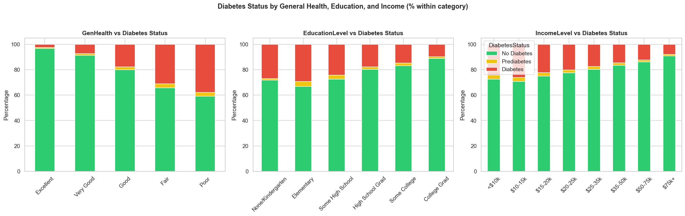
2.6BMI Categories
Standard WHO BMI bands: Underweight (<18.5), Normal (18.5–25), Overweight (25–30), Obese (30+).
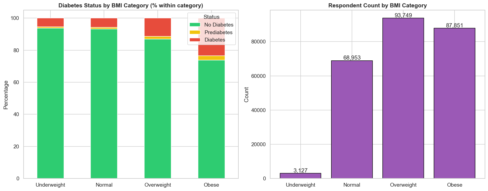
2.7Correlation Structure
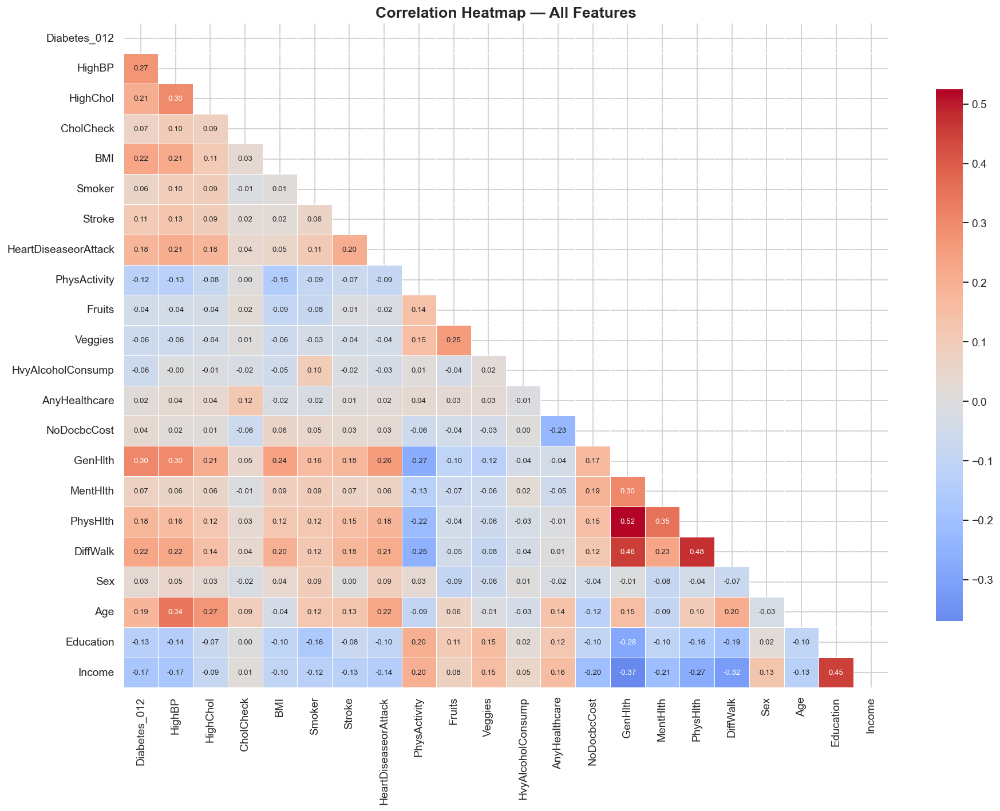
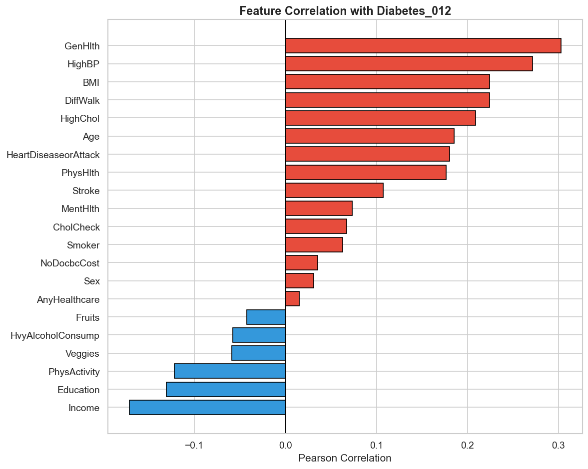
Diabetes_012.GenHlth, HighBP, BMI,
DiffWalk, and HighChol show the strongest positive correlations with
diabetes status, while PhysActivity, Education, and Income
show the strongest negative (protective) correlations. No pair of features exceeds |r| = 0.7,
so regularized linear models and tree ensembles can both use the full feature set without major
multicollinearity concerns — though GenHlth / PhysHlth /
DiffWalk are moderately related (all reflect overall health).
2.8Statistical Significance & Effect Sizes
Correlation captures linear association, but the target is categorical and several features are nominal/ordinal. To rigorously rank risk factors, we run a chi-square test of independence + Cramér's V for categorical/ordinal features, and a Kruskal-Wallis H-test + epsilon-squared for the continuous/count features. With n ≈ 253,680, p-values are vanishingly small for almost everything — so we focus on effect size to judge practical importance.
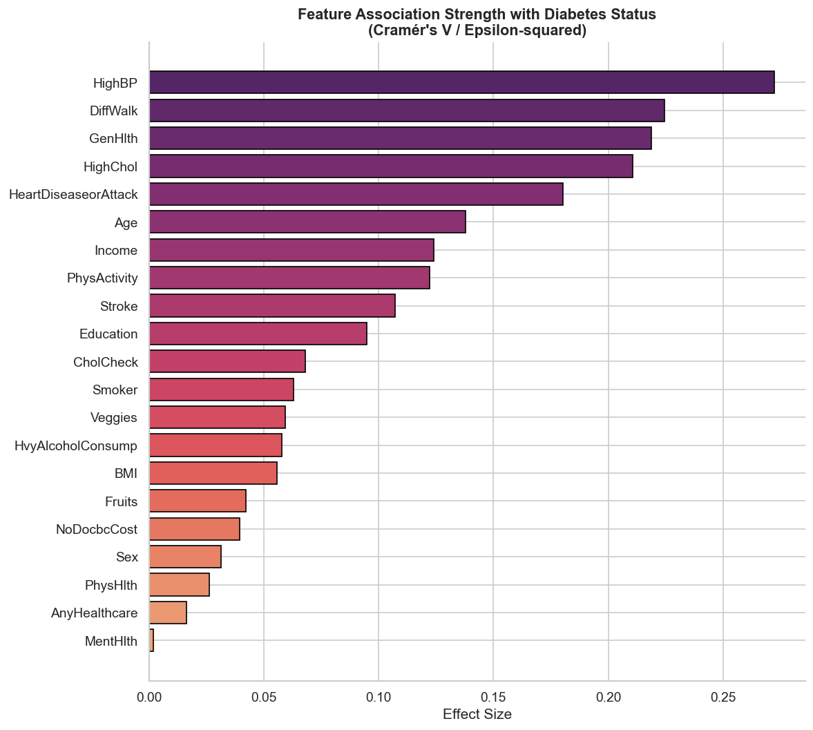
| Rank | Feature | Effect Size | Interpretation |
|---|---|---|---|
| 1 | HighBP | 0.272 | Diabetics are ~2× more likely to have high blood pressure |
| 2 | DiffWalk | 0.224 | Difficulty walking nearly 3× more common in diabetics (37% vs 13%) |
| 3 | GenHlth | 0.219 | "Poor" self-rated health → 35%+ diabetes prevalence vs <5% for "Excellent" |
| 4 | HighChol | 0.211 | High cholesterol ~30 pts more prevalent in diabetics |
| 5 | HeartDiseaseorAttack | 0.180 | 3× more common in diabetics (22% vs 7%) |
| 6 | Age | 0.138 | Prevalence rises from <5% (18–24) to ~25% (60+) |
| 7 | Income | 0.124 | Lower income brackets show higher prevalence (socioeconomic gradient) |
| 8 | PhysActivity | 0.122 | Protective — less common among diabetics (63% vs 78%) |
| 9 | Stroke | 0.107 | ~3× more common in diabetics (9.2% vs 3.2%) |
| 10 | Education | 0.095 | Lower education brackets show higher prevalence |
BMI ranks lower on this particular scale (epsilon-squared ≈ 0.056, #15 overall)
— Cramér's V and epsilon-squared aren't perfectly comparable across test types, and BMI's
practical signal remains strong: median BMI rises 27 → 30 → 31
across No Diabetes → Prediabetes → Diabetes, and the Obese category shows
23.4% diabetes prevalence vs ~5% for Normal/Underweight.
2.9Executive Summary
A single combined view of the headline EDA findings — dataset quality, target distribution, top risk factors, and modeling implications — reused throughout the dashboard and this report.
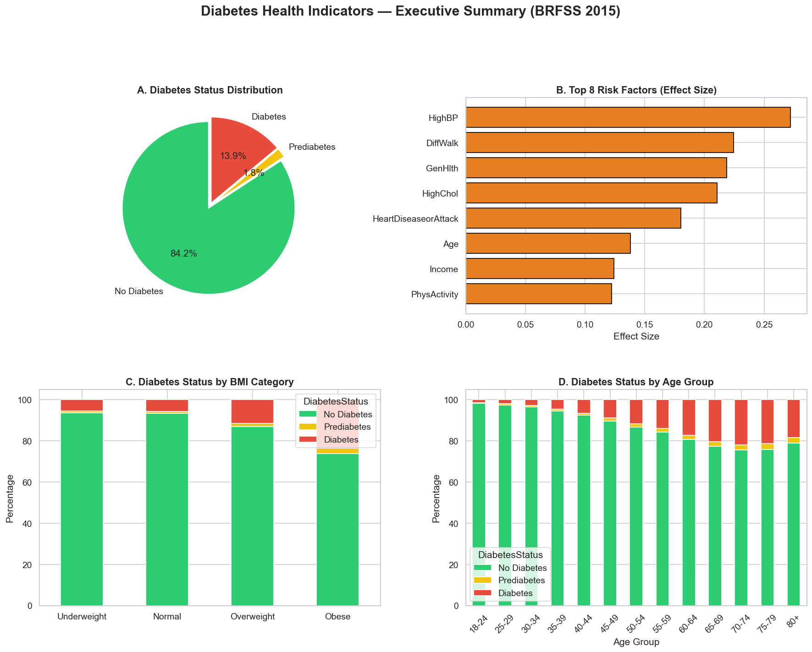
- Highest-risk segments: Obese, age 60+, Poor self-rated health, difficulty walking, existing HighBP/HighChol/HeartDisease — 25–40% diabetes prevalence.
- Lowest-risk segments: Normal/Underweight BMI, age 18–24, Excellent self-rated health, physically active — under 5% diabetes prevalence.
- Modeling implications: imbalance handling is critical (class weighting / SMOTE), stratified splits, and priority features for engineering:
HighBP,DiffWalk,GenHlth,HighChol,HeartDiseaseorAttack,Age,BMI,Income.
03 · Feature Engineering
Feature Engineering
Building on the EDA findings, a small set of derived features was engineered and validated to
sharpen the signal available to the models — without inflating dimensionality or introducing
leakage. All transformations live in src/features.py so the dashboard's live
predictor applies the exact same pipeline as training.
3.1BMI Outlier Capping
The EDA showed BMI ranging from 12 to 98, with the 99.5th percentile at 55. Values
are capped at Q3 + 3×IQR (≈ 52) — the standard "extreme outlier"
convention. This affects only ~0.7% of rows and tames a handful of likely
data-entry extremes (BMI > 70) without touching the genuinely informative obese range.
3.2BMI Category
WHO bands mapped to a 4-level ordinal feature: 0 = Underweight, 1 = Normal, 2 = Overweight, 3 = Obese.
3.3Lifestyle Score (0–5)
A composite score: +1 each for PhysActivity, Fruits,
Veggies (present), and +1 each for not Smoker
and not HvyAlcoholConsump. Higher = healthier lifestyle.
HvyAlcoholConsump itself showed a
negative correlation with diabetes in the EDA (likely an age/selection confound: heavy
drinkers in this survey skew younger). The composite score is informative for the bulk of the
population (scores 1–5), but the extreme score-0 group reflects a small, confounded subgroup
rather than "very unhealthy = very high risk".
3.4Comorbidity Score (0–4)
A count of HighBP, HighChol, Stroke, and
HeartDiseaseorAttack — the four features with the strongest chi-square effect
sizes (rank #1, #4, #9, #5 in the EDA) — summarizing overlapping cardiovascular risk signals
into a single ordinal feature.
ComorbidityScore
outranks every original feature, including GenHlth (0.30) and
HighBP (0.27) — the single best linear predictor in the dataset.
3.5Stratified Train / Validation / Test Split
Split 70% train / 15% validation / 15% test, stratified on
Diabetes_012 to preserve the 84.2% / 1.8% / 13.9% class ratio in every split —
critical given the severe imbalance.
| Step | Result |
|---|---|
| BMI capping | 1,707 rows (0.67%) capped at 52 |
BMICategory | 4-level ordinal, r = 0.22 with target |
LifestyleScore | 0–5 composite, r = −0.10 (non-monotonic at extreme 0, confounded by HvyAlcoholConsump) |
ComorbidityScore | 0–4 composite, r = 0.32 — strongest single feature in the dataset |
| Train / Val / Test | 177,576 / 38,052 / 38,052 rows — class ratios preserved exactly |
| Output | data/processed/{train,val,test,diabetes_engineered}.csv |
04 · Predictive Modeling
Predictive Modeling
Five model families — a dummy baseline, a linear model, a bagged-tree ensemble, and two gradient-boosting variants — were trained and compared, with the strongest candidate then hyperparameter-tuned and explained with SHAP.
4.1Baseline & Class Imbalance Strategy
A DummyClassifier that always predicts the majority class ("No Diabetes") sets the
floor: 84.2% accuracy with zero ability to detect diabetes or prediabetes —
0.0 macro-F1 for both minority classes. Every real model must beat this on macro-F1 and balanced
accuracy, not just accuracy.
Two imbalance strategies were compared on a fast Logistic Regression baseline: class/sample weighting vs. SMOTE oversampling.
class_weight='balanced' (and sample_weight
for gradient-boosted models) gave comparable or better macro-F1 / balanced accuracy than SMOTE,
without synthesizing unrealistic values for binary features (e.g. HighBP = 0.37) or
inflating the training set ~2.5×. Class/sample weighting was used as the default
strategy for every model below.
4.2Model Comparison (Validation Set)
| Model | Accuracy | Balanced Acc. | Macro F1 | Macro Precision | Macro Recall | Macro ROC-AUC |
|---|---|---|---|---|---|---|
| Dummy (Most Frequent) | 0.842 | 0.333 | 0.305 | 0.281 | 0.333 | – |
| Logistic Regression | 0.642 | 0.528 | 0.428 | 0.448 | 0.528 | 0.777 |
| Random Forest | 0.713 | 0.501 | 0.433 | 0.429 | 0.501 | 0.761 |
| HistGradientBoosting | 0.625 | 0.518 | 0.420 | 0.444 | 0.518 | 0.771 |
| XGBoost | 0.655 | 0.496 | 0.420 | 0.434 | 0.496 | 0.752 |
| LightGBM | 0.673 | 0.498 | 0.425 | 0.432 | 0.498 | 0.744 |
| LightGBM (Tuned) | 0.628 | 0.529 | 0.424 | 0.447 | 0.529 | 0.777 |
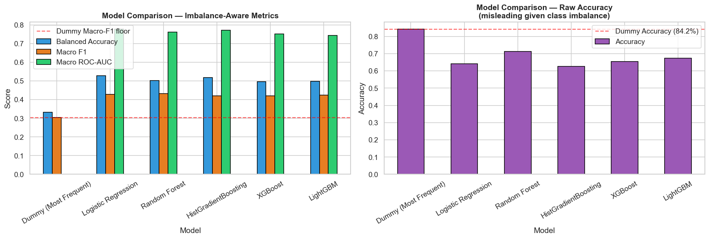
class_weight='balanced' is applied per bootstrap sample and Prediabetes
is only 1.8% of the data. All tree ensembles trail Logistic Regression on ROC-AUC — somewhat
unusual, and the motivation for hyperparameter tuning below.
4.3Hyperparameter Tuning
LightGBM has the most hyperparameters to exploit and trains fastest, so it was selected for a RandomizedSearchCV (20 iterations, 3-fold stratified CV, scored on macro-F1) to test whether tuning could close the gap with Logistic Regression.
| Metric | LR (baseline) | LightGBM (untuned) | LightGBM (tuned) | Random Forest |
|---|---|---|---|---|
| Balanced Accuracy | 0.5278 | 0.4979 | 0.5288 ▲ | 0.5014 |
| Macro ROC-AUC | 0.7774 | 0.7438 | 0.7773 ▲ | 0.7609 |
| Macro F1 | 0.4279 | 0.4249 | 0.4241 | 0.4327 |
Best CV macro-F1 = 0.508, with parameters favoring shallow trees:
num_leaves=15, learning_rate=0.01, n_estimators=400,
colsample_bytree=0.6, subsample=0.8, reg_alpha=0.1,
reg_lambda=0.1.
4.4Final Test Set Evaluation
For the production model, the tuned LightGBM was retrained on train + validation combined (215,628 rows) using the best hyperparameters found above, then evaluated on the untouched 38,052-row test set.
| Metric | Value |
|---|---|
| Accuracy | 0.628 |
| Balanced Accuracy | 0.525 |
| Macro F1 | 0.422 |
| Macro Precision | 0.446 |
| Macro Recall | 0.525 |
| Macro ROC-AUC | 0.775 |
| Diabetes Recall | 0.61 |
| Prediabetes Recall | 0.32 |
4.5Feature Importance (SHAP)
SHAP (SHapley Additive exPlanations) values quantify each feature's contribution to individual
predictions, giving a model-agnostic, theoretically grounded measure of importance — and
power the dashboard's "Model Insights" tab. TreeExplainer was run on a random sample
of the test set, averaging mean |SHAP| across all 3 classes.
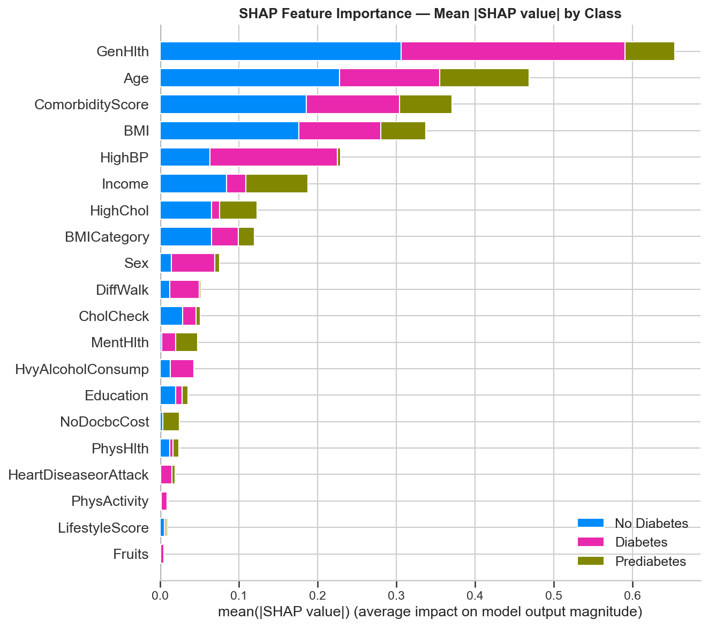
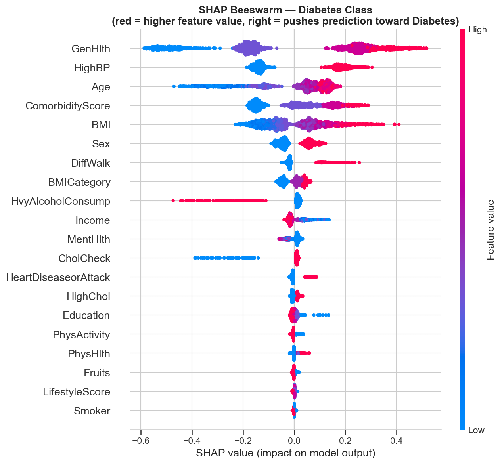
| Rank | Feature | Mean |SHAP| |
|---|---|---|
| 1 | GenHlth | 0.218 |
| 2 | Age | 0.156 |
| 3 | ComorbidityScore | 0.124 |
| 4 | BMI | 0.113 |
| 5 | HighBP | 0.076 |
| 6 | Income | 0.063 |
| 7 | HighChol | 0.041 |
| 8 | BMICategory | 0.040 |
| 9 | Sex | 0.025 |
| 10 | DiffWalk | 0.017 |
- GenHlth (self-reported general health) is the single strongest predictor by a wide margin. The beeswarm shows a clean pattern: higher GenHlth values (1 = Excellent → 5 = Poor) push predictions firmly toward "Diabetes". It ranked #3 in the EDA's Cramér's V, but is clearly #1 once feature interactions are accounted for.
- The engineered
ComorbidityScore(rank #3) outranks every one of its individual components (HighBP #5, HighChol #7; Stroke and HeartDiseaseorAttack don't make the top 10) — validating the feature engineering work. The model extracts more signal from the aggregated comorbidity count than from any single condition. HighBPdropped from #1 (univariate Cramér's V = 0.272) to #5, andDiffWalkdropped from #2 to #10 — the classic effect of correlated features in a multivariate model: onceGenHlthandComorbidityScore"claim" the shared signal, these features' marginal contribution shrinks even though their univariate association is large.BMI(raw, #4) outranksBMICategory(binned, #8) — the model benefits from the finer granularity of the continuous value over the 4-bucket WHO category.Income(#6) carries real predictive signal independent of clinical/behavioral variables — consistent with the EDA's income-stratified prevalence pattern.
05 · Conclusion
Results, Takeaways & Limitations
5.1What We Learned
- A real but bounded signal. Six very different models — a dummy baseline, a linear model, a bagged-tree ensemble, and three gradient-boosting variants — all converge to Balanced Accuracy ≈ 0.50–0.53 and ROC-AUC ≈ 0.74–0.78. This "ceiling" mirrors the modest effect sizes found in the EDA (max Cramér's V = 0.272 for HighBP) — the 21 BRFSS lifestyle/comorbidity questions carry real signal, but nowhere near enough to diagnose diabetes. They're proxies for risk, not measurements of disease.
- Feature engineering paid off. The engineered
ComorbidityScore(SHAP rank #3) outranks every one of its individual components (HighBP #5, HighChol #7) — the aggregated count of pre-existing conditions is more predictive than any single condition alone.BMICategoryand the cappedBMIboth made the top 8. - Class imbalance handling matters more than algorithm choice.
class_weight/sample_weight = 'balanced'was essential — without it, every model collapses to predicting "No Diabetes" for almost everything. Random Forest with balancing still nearly failed on Prediabetes (recall 0.05); tuned LightGBM reached 0.32. - Hyperparameter tuning closed the gap with Logistic Regression — tuned LightGBM (Balanced Acc 0.529, ROC-AUC 0.777 on validation) essentially tied LR (0.528 / 0.777), while offering far better minority-class recall than Random Forest and native SHAP support.
- GenHlth (self-reported general health) is the dominant predictor (SHAP rank #1, more than 1.5× the next feature), followed by Age and ComorbidityScore — all clinically sensible.
5.2Limitations & Honest Framing
- Macro F1 (0.42) and Prediabetes recall (0.32) remain low. This model is suitable as a population-level risk-screening / triage tool (flagging people for follow-up testing) — not a diagnostic tool. A "Diabetes" prediction should prompt an HbA1c / fasting-glucose test, not a diagnosis.
- The dataset is self-reported survey data (BRFSS) — no lab values (HbA1c, fasting glucose), no family history, no medication data. These would likely be far more predictive than any model tuning.
- 9.4% duplicate rows (documented in the EDA) reflect the limited combinatorial space of categorical survey responses, not data quality issues — but they mean some "unique individuals" may be over- or under-represented proportionally across train/val/test splits.
5.3From Notebook to Product
The final model (models/lightgbm_diabetes_final.pkl) and its metadata power an
interactive Streamlit dashboard with four tabs:
- Overview — dataset stats, target distribution, and the executive-summary figure.
- Interactive EDA — Plotly-based filters by age, sex, and BMI category to explore feature/target relationships live.
- Risk Predictor — a short health/lifestyle form runs the exact same
src/features.pypipeline used in training, then returns a predicted class with probability breakdown. - Model Insights — the model comparison table, SHAP global importance, confusion matrix, and classification report shown above.
06 · Interactive Demo
Try the Live Dashboard
Everything above — the EDA, the engineered features, and the tuned LightGBM model — is wired into a live, interactive Streamlit app embedded directly below. Fill in the Risk Predictor tab with a sample health profile to see a real-time prediction and probability breakdown.
6.1Preview

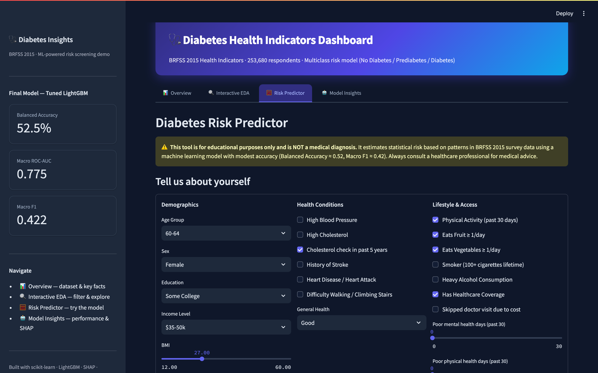
07 · Resources